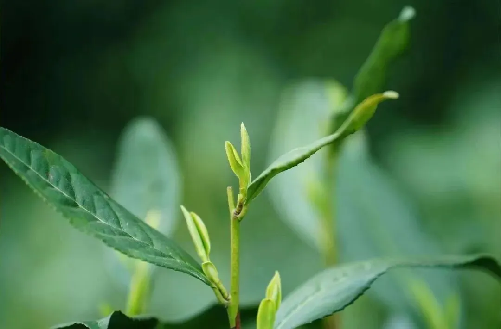
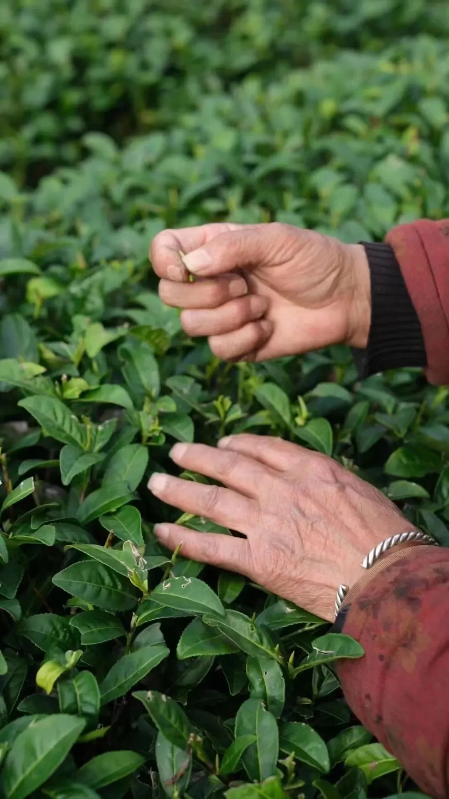
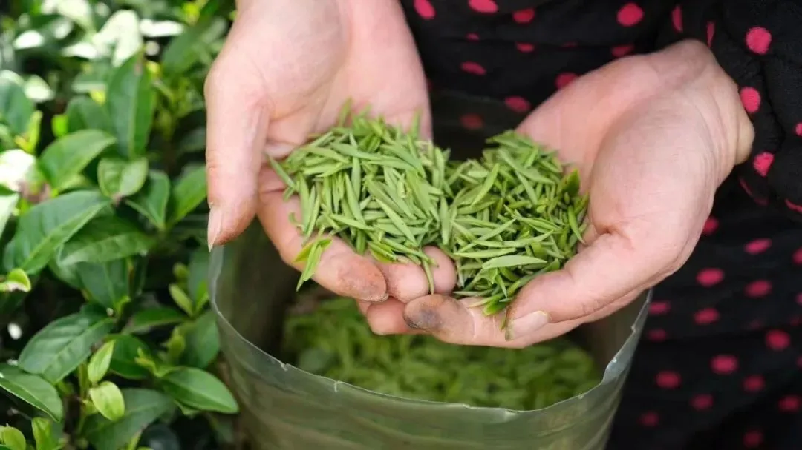

火烧屁股
这段时间忙“超级个体”那个副业试验，占用了原本属于公众号的时间，故更新寥寥。
这段时间地产江湖暗流涌动，我选几个自己有表达欲的写一写。
NO. 1｜壹
去年上半年， 万达 出现流动性压力。
三天前，万达与太盟投资集团、中信资本、阿布扎比投资局、穆巴达拉投资等签署了投资协议。 这个财团 向万达投资了 600 亿资金，拿走了60%的股权， 老王虽然仍是单一大股东但失去了万达的绝对 控股权 。
十年如一梦，十年前的王健林意气风发，或许太过于意气风发，对即将经历的噩梦般的七年，没有丝毫的察觉。命运的河流会在那一年悄然拐了个弯。
曾经以为自己是浪里白条，后来才发现自己只是一半，白条鸡的白条，简称肉鸡。此后的老王，明显低调多了，似乎学会了敬畏某种东西。
对于家大业大的“老王们”来说，如果你不把权贵放在眼里，那么，权贵就会把你放在眼里；如果你不把权贵供在高台上，那么权贵就会把你放在祭台上。
万科被合作方举报 涉嫌非法设立类金融机构发放高利贷、欺瞒股东挪用项目建设资金等问题；郁亮团伙利用万科挪用资金、发放高利贷、偷税漏税、洗钱等违法经营问题。
万科回应称合作方在网上发布的恶意言论，内容严重失实。这点有些让人失望，具体哪里失实，怎么不展开说？最好是双方互摆证据，这符合我等吃瓜群众的喜好，哈哈。
我看了下举报信的具体内容，写得挺详细的，有些操作其实是房地产行业秘而不宣的潜规则，比如 挪用的资金、 以极低价格向第三方出售车位和储藏室等项目公司资产，并将相关收入洗出项目公司，相关人员再从第三方处获利。
如果万科没摆证据，那么按目前呈现出来的资料、行业潜规则，以及我对万科的了解，个人会更倾向于合作方。
至于最终结果，还是等结果吧。
万科的管理层权力过大，私欲太重，这一直为人所诟病，江湖上调侃这是“家奴（管家）翻身做主人。
大股东等原本才是主人，现在却制约不了一个管家，这属实有趣。市场好，管家能替主子搞钱的时候，一切都可以睁一只眼闭一只眼；市场差、亏损严重、摇摇欲坠时，管家还各种搞事，会不会被清算？
反正历史上，这样的管家，目前为止我还没看到善终的。
至于万科的“高管降薪”，抄袭碧桂园的，一模一样，差评，一点创新都没有，搞不好接下去会要求中基层也降薪。
NO. 2｜贰
深圳 3月份的二手房成交突破5100套，创下三年来新高。
但是，这只是成交量涨了，价格仍然在继续下跌，属于典型的“以价换量”，和我二月份的预判一致。
上海 现在也是“加量不加价”，成交的，大多是降价的房源。原本市场预计3月底会有楼市新政，结果中海那个热销196亿的红盘被媒体热炒，这时候出新政，有点那个啥不正确。大概率要推迟到月底了。
中海那个盘属于典型的价格倒挂楼盘，也就是新房的价格比周边二手房低好几万（新房限价等因素），这种出现热销和抢房，一点也不奇怪，不能当正常市场去看。
我们小区（仁恒公园世纪）这两年好多业主卖房，有些甚至是卖房后租房住，以金融从业者为典型代表。
北京 的市场，大多也是“以价换量”，成交量上升得还可以，但成交价一直在往下走。新房市场，中海宣传的5盘齐开销售额，水分大得我能跳进去泡个澡。
百强房企1-3月的销售额，和去年同期相比，下滑47.5% ，市场不回暖，继续这么下滑，没有哪家房企能扛得住，中海保利华润也不行。
有时候，我们太容易被主观的情感主导，去判断客观的现象和趋势，以至于屡屡出现错误判断。
这些年，我也在努力改正这一点，现在比以前好多了。
最终要破碎的，都是你的自我限制，是那些你信以为真、把自己捆绑的信念。 每当你预设了什么是正确的，就聆听不到真实的答案了。
NO. 3｜叁
“超级个体” 这事，在2月底写过。
春节假期，我认真想了想，觉得如果有一个可以持续深耕的业务，人均创收和利润都高，又不需要占用过多的人力等资资源，那用来做“超级个体”试验，再合适不过。
然后就有了2月底开始的新副业，2个人的配置（我和年初招的新助理）。在VC领域摸爬滚打十余年，见过形形色色的企业和风控问题，所以决定发挥这部分优势和专业，从企业的需求入手，为企业提供发展所需的规划和风控等咨询。
客群主要是过往认识的朋友们，以及老带新。目前效果和营收不错的，我没打算做大，就这样做点自己的圈层即可，边喝茶聊天，边把生意给做了，挺适合我。
个人并不喜欢宏大叙事，甚至是反感，所以如今尽可能地去远离。有人画再大的饼，咱也不吃一口：
大秦一统天下，功绩是秦始皇的；普通百姓还是一样做养料、耗材、炮灰。
而只有把渺小、微不足道的卑微个人，套用到整个宏大叙事中，才能让这些卑微的个体产生狂热和躁动，错误地觉得自己很重要。这样的人，最好被动员。
当下的我，充分理解生物的多样性，即便不理解的也能接受。每个人不理解的事多了，高考试卷上那些题你也不理解，但你不也没说什么。
... ...
前两天，武夷山的春茶开始采摘第一波（红茶），4月中下旬第二波和5月初最后一波岩茶。
因为过些天，我要去一趟韩国，这个月下旬还要去一趟日本，去走走看看，所以今年的武夷山采茶季，我这些天提前去了一趟：



这个助农项目，一眨眼快三周年了，时间真是快~
这是我很有成就感的一个项目， 品质很好 ，几乎每天都能在后台看到大家的夸赞，这是在给我喂精神糖果，哈哈哈。
天叙的产品，我和身边的 亲朋好友在喝， 公司的员工也在喝，最近一年海外的朋友买得也很多，谢谢大家厚爱，平时有什么建议和意见，欢迎多提。
做个95折活动，暂定 14天 ，可能会提前结束，因为第二波采茶开始会很忙。 大家有需要就 看看（戳）： 天叙小馆采茶季特惠活动 。
按日期浏览全部来源（同日按条目标识排序）